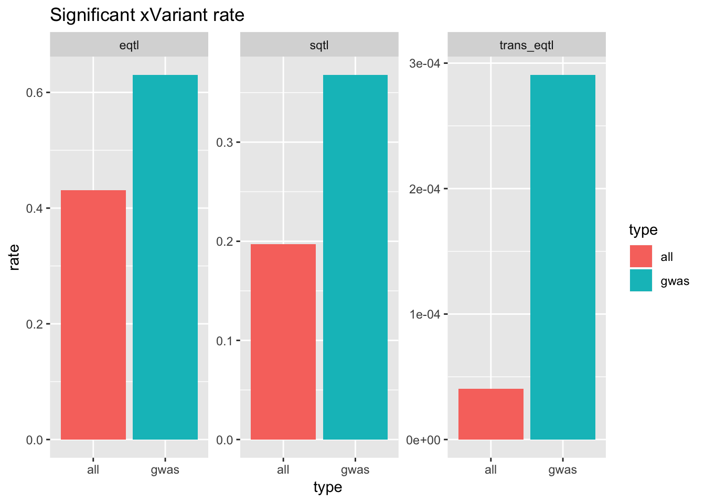

GWAS catalog
Last updated: 2019-06-07
Checks: 6 0
Knit directory: gtex-gwas-analysis/
This reproducible R Markdown analysis was created with workflowr (version 1.3.0). The Checks tab describes the reproducibility checks that were applied when the results were created. The Past versions tab lists the development history.
Great! Since the R Markdown file has been committed to the Git repository, you know the exact version of the code that produced these results.
Great job! The global environment was empty. Objects defined in the global environment can affect the analysis in your R Markdown file in unknown ways. For reproduciblity it’s best to always run the code in an empty environment.
The command set.seed(20190312) was run prior to running the code in the R Markdown file. Setting a seed ensures that any results that rely on randomness, e.g. subsampling or permutations, are reproducible.
Great job! Recording the operating system, R version, and package versions is critical for reproducibility.
Nice! There were no cached chunks for this analysis, so you can be confident that you successfully produced the results during this run.
Great! You are using Git for version control. Tracking code development and connecting the code version to the results is critical for reproducibility. The version displayed above was the version of the Git repository at the time these results were generated.
Note that you need to be careful to ensure that all relevant files for the analysis have been committed to Git prior to generating the results (you can use wflow_publish or wflow_git_commit). workflowr only checks the R Markdown file, but you know if there are other scripts or data files that it depends on. Below is the status of the Git repository when the results were generated:
Ignored files:
Ignored: .Rhistory
Ignored: .Rproj.user/
Ignored: analysis/.Rhistory
Note that any generated files, e.g. HTML, png, CSS, etc., are not included in this status report because it is ok for generated content to have uncommitted changes.
These are the previous versions of the R Markdown and HTML files. If you’ve configured a remote Git repository (see ?wflow_git_remote), click on the hyperlinks in the table below to view them.
| File | Version | Author | Date | Message |
|---|---|---|---|---|
| Rmd | 4a09965 | Yanyu Liang | 2019-06-07 | workflowr::wflow_publish(“gwas_catalog.Rmd”) |
| Rmd | 18cfb96 | Yanyu Liang | 2019-05-02 | updated gwas catalog |
| html | 18cfb96 | Yanyu Liang | 2019-05-02 | updated gwas catalog |
| html | d47dab0 | Alvaro | 2019-03-26 | Updated workflowr site pages. |
| html | 121dd26 | Alvaro | 2019-03-26 | wflow_publish(all = TRUE) |
| Rmd | 910a320 | Alvaro | 2019-03-26 | wflow_git_commit(all = TRUE) |
| Rmd | 066a93f | Yanyu Liang | 2019-03-26 | changed gwas catalog table name to make it more clear |
| Rmd | 0bed690 | Yanyu Liang | 2019-03-26 | add gwas catalog tables and basic stats |
library(pander)
library(dplyr)
Attaching package: 'dplyr'The following objects are masked from 'package:stats':
filter, lagThe following objects are masked from 'package:base':
intersect, setdiff, setequal, unionlibrary(reshape2)
library(ggplot2)Analysis pipeline
First of all, we extracted all GWAS catalog variants which were identified as GTEx v8 variant (by matching rsID in lookup table). These variants were defined as GWAS catalog variants in this analysis. Next, we defined a variant to be cis-eVariant if it was identified as cis-eQTL in at least one gene and one tissue (at FDR < 0.05). Similarly, we defined a variant to be cis-sVariant if it was identified as cis-sQTL in at least one cluster (only one cluster was used for each gene) and one tissue (at FDR < 0.05). In the same manner, we defined a variant to be trans-eVariant if it was identified as trans-eQTL in at least one gene one tissue (at FDR < 0.1). Note that cis-eVariant, cis-sVariant, and trans-eVariant were counted in signif entry in the following 2-by-2 table.
We obtained the list of variants that were tested for cis-eQTL and cis-sQTL by scanning through the files reporting all tested variant-gene/cluster pairs. We obtained the list of variants that were tested for trans-eQTL by scanning through the files in trans-eQTL/variant_list/ which contained the list of variants included in trans-eQTL testing by tissue. Note that these variant lists were counted in tested entry in the following 2-by-2 table.
About loaded data.frame
The script to generate the input data.frame can be found here
The full script is shown below
library(data.table)
options(datatable.fread.datatable = F)
library(dplyr)
df = readRDS('tables.rds')
df_gwas_gtex_table = df$df_gwas_gtex_table
df_gwas_table = df$df_gwas_table
summary_gwas_variant <- data.frame(gwas_table_idx = 1 : nrow(df_gwas_table), gwas_id = df_gwas_table$rsID)
summary_gwas_variant$gtex_id <- rep(NA, nrow(df_gwas_table))
summary_gwas_variant$gtex_id[match(df_gwas_gtex_table$rsID, df_gwas_table$rsID)] <- df_gwas_gtex_table$GTExID
list_signif_eqtl = fread('../../output/ALL.signif_eqtl.GTExFDRlt0.05.txt', header = F)
list_signif_sqtl = fread('../../output/ALL.signif_eqtl.GTExSQTLFDRlt0.05.txt', header = F)
list_tested_eqtl = fread('../../output/ALL.tested_eqtl.GTExV8TestedEQTL.txt', header = F)
list_tested_sqtl = fread('../../output/ALL.tested_eqtl.GTExV8TestedSQTL.txt', header = F)
list_tested_trans_eqtl = fread('../../output/ALL.tested_trans_eqtl.GTExTestedTransEQTL.txt', header = F)
list_signif_trans_eqtl1 = fread('/gpfs/data/gtex-group/v8/trans-eQTL/trans_egenes/trans_genes_lincRNA_FDR_0.1.tsv')
list_signif_trans_eqtl2 = fread('/gpfs/data/gtex-group/v8/trans-eQTL/trans_egenes/trans_genes_protein_coding_FDR_0.1.tsv')
list_signif_trans_eqtl = union(list_signif_trans_eqtl1$rsid, list_signif_trans_eqtl2$rsid)
my_summarize = function(gwas_table, tested_list, signif_list) {
# table
# type tested signif
# gwas t_gwas s_gwas
# all t_all s_all
t_all = length(tested_list)
s_all = length(signif_list)
gwas = gwas_table %>% filter(!is.na(gtex_id)) %>% filter(!duplicated(gwas_id)) %>% mutate(is_tested = gtex_id %in% tested_list, is_signif = gtex_id %in% signif_list)
t_gwas = sum(gwas$is_tested)
s_gwas = sum(gwas$is_signif)
data.frame(type = c('gwas', 'all'), tested = c(t_gwas, t_all), signif = c(s_gwas, s_all))
}
list_tested_eqtl = list_tested_eqtl$V1
list_signif_eqtl = list_signif_eqtl$V1
list_tested_sqtl = list_tested_sqtl$V1
list_signif_sqtl = list_signif_sqtl$V1
list_tested_trans_eqtl = list_tested_trans_eqtl$V1
eqtl = my_summarize(summary_gwas_variant, list_tested_eqtl, list_signif_eqtl)
sqtl = my_summarize(summary_gwas_variant, list_tested_sqtl, list_signif_sqtl)
trans_eqtl = my_summarize(summary_gwas_variant, list_tested_trans_eqtl, list_signif_trans_eqtl)
ngwas = sum(!duplicated(summary_gwas_variant$gwas_id))
saveRDS(list(eqtl = eqtl, sqtl = sqtl, trans_eqtl = trans_eqtl, ngwas = ngwas), 'table_sub_new.rds')Load data.frame
df = readRDS('data/gwas_catalog_tables.rds')
eqtl = df$eqtl
sqtl = df$sqtl
trans_eqtl = df$trans_eqtl
ngwas = df$ngwasCount table
eqtl %>% pander(caption = 'cis-eVariant')| type | tested | signif |
|---|---|---|
| gwas | 44137 | 27819 |
| all | 10743590 | 4632457 |
sqtl %>% pander(caption = 'cis-sVariant')| type | tested | signif |
|---|---|---|
| gwas | 44029 | 16197 |
| all | 10299184 | 2027766 |
trans_eqtl %>% pander(caption = 'trans-eVariant')| type | tested | signif |
|---|---|---|
| gwas | 34406 | 10 |
| all | 5302059 | 215 |
QTL rate: GWAS catalog vs. overall
rate = eqtl %>% mutate(rate = signif / tested, qtl = 'eqtl')
rate = rbind(rate, sqtl %>% mutate(rate = signif / tested, qtl = 'sqtl'))
rate = rbind(rate, trans_eqtl %>% mutate(rate = signif / tested, qtl = 'trans_eqtl'))
rate %>% ggplot() + geom_bar(aes(x = type, y = rate, fill = type), stat = 'identity') + facet_wrap(~qtl, scales = 'free_y') + ggtitle('Significant xVariant rate')
| Version | Author | Date |
|---|---|---|
| 18cfb96 | Yanyu Liang | 2019-05-02 |
Test rate (percentage of GWAS catalog variants are tested for QTL)
rate = eqtl %>% filter(type == 'gwas') %>% mutate(rate = tested / ngwas, qtl = 'eqtl')
rate = rbind(rate, sqtl %>% filter(type == 'gwas') %>% mutate(rate = tested / ngwas, qtl = 'sqtl'))
rate = rbind(rate, trans_eqtl %>% filter(type == 'gwas') %>% mutate(rate = tested / ngwas, qtl = 'trans_eqtl'))
rate %>% ggplot() + geom_bar(aes(x = qtl, y = rate), stat = 'identity') + ggtitle('Percentage of GWAS catalog variants are tested for QTL')
| Version | Author | Date |
|---|---|---|
| 18cfb96 | Yanyu Liang | 2019-05-02 |
sessionInfo()R version 3.4.0 (2017-04-21)
Platform: x86_64-apple-darwin16.5.0 (64-bit)
Running under: macOS 10.13.6
Matrix products: default
BLAS: /System/Library/Frameworks/Accelerate.framework/Versions/A/Frameworks/vecLib.framework/Versions/A/libBLAS.dylib
LAPACK: /System/Library/Frameworks/Accelerate.framework/Versions/A/Frameworks/vecLib.framework/Versions/A/libLAPACK.dylib
locale:
[1] en_US.UTF-8/en_US.UTF-8/en_US.UTF-8/C/en_US.UTF-8/en_US.UTF-8
attached base packages:
[1] stats graphics grDevices utils datasets methods base
other attached packages:
[1] bindrcpp_0.2.2 ggplot2_3.1.0 reshape2_1.4.3 dplyr_0.7.8
[5] pander_0.6.3
loaded via a namespace (and not attached):
[1] Rcpp_1.0.1 compiler_3.4.0 pillar_1.3.1 git2r_0.25.2
[5] plyr_1.8.4 workflowr_1.3.0 bindr_0.1.1 tools_3.4.0
[9] digest_0.6.18 evaluate_0.13 tibble_2.0.1 gtable_0.2.0
[13] pkgconfig_2.0.2 rlang_0.3.1 rstudioapi_0.10 yaml_2.2.0
[17] xfun_0.6 withr_2.1.2 stringr_1.4.0 knitr_1.22
[21] fs_1.2.7 rprojroot_1.3-2 grid_3.4.0 tidyselect_0.2.5
[25] glue_1.3.1 R6_2.4.0 rmarkdown_1.12 purrr_0.2.3
[29] magrittr_1.5 whisker_0.3-2 backports_1.1.4 scales_1.0.0
[33] htmltools_0.3.6 assertthat_0.2.0 colorspace_1.4-0 labeling_0.3
[37] stringi_1.2.4 lazyeval_0.2.0 munsell_0.5.0 crayon_1.3.4